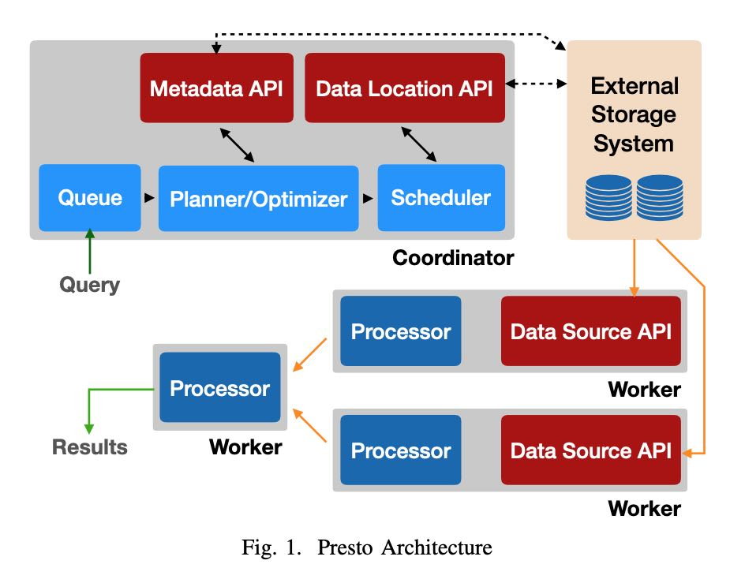
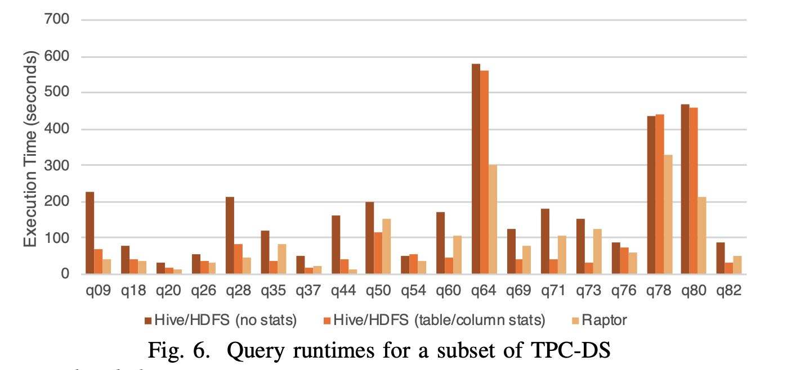
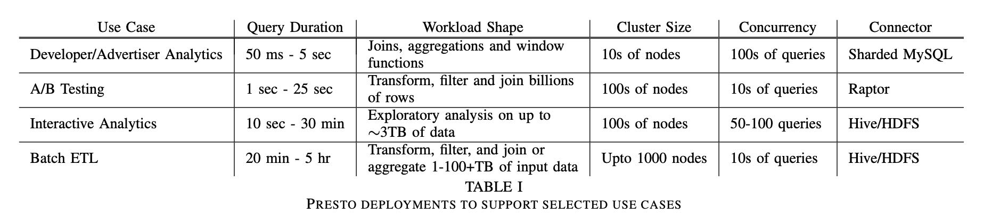
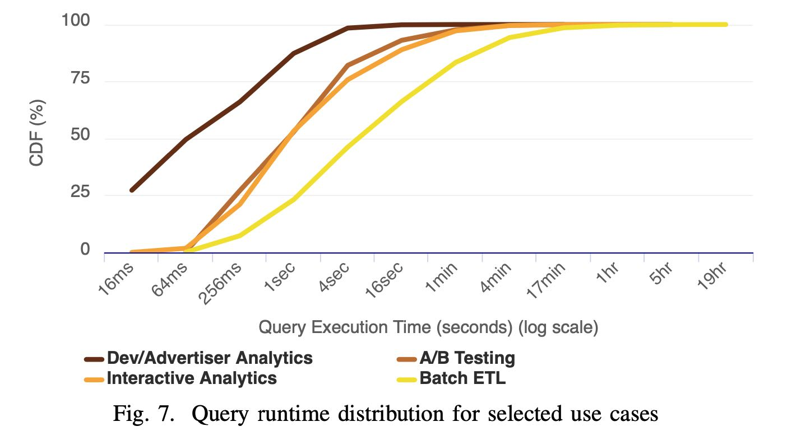
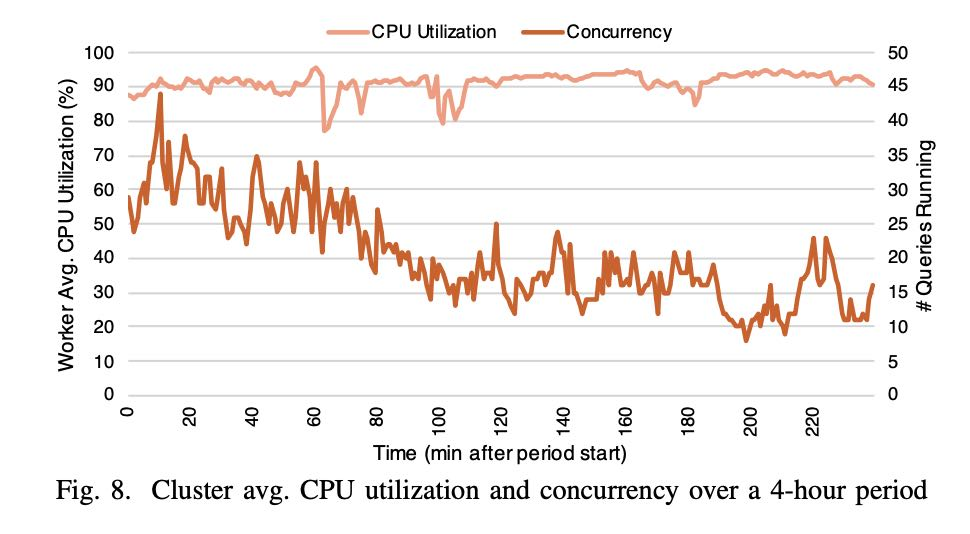

Presto SQL on Everything
Presto使用情况，看上去这个生态系统还是很不错的：
- 被许多大公司使用，AWS Athena也是基于Presto来构建的
- 可以访问Hadoop, RDBMS, NoSQL, Kafka等数据源
- 内部使用Thrift RPC来访问外部数据源
- 外部暴露HTTP接口来和各种BI系统进行对接
- 内置的Hive Connector可以读写HDFS，S3上数据， 支持ORC/Parquet/Avro格式
Presto is an open-source distributed SQL query engine that has run in production at Facebook since 2013 and is used today by several large companies, including Uber, Netflix, Airbnb, Bloomberg, and LinkedIn. Organizations such as Qubole, Treasure Data, and Starburst Data have commercial offerings based on Presto. The Amazon Athena1 interactive querying service is built on Presto. With over a hundred contributors on GitHub, Presto has a strong open source community.
Presto is designed to be adaptive, flexible, and extensible. It provides an ANSI SQL interface to query data stored in Hadoop environments, open-source and proprietary RDBMSs, NoSQL systems, and stream processing systems such as Kafka. A ‘Generic RPC’2 connector makes adding a SQL interface to proprietary systems as easy as implementing a half dozen RPC endpoints. Presto exposes an open HTTP API, ships with JDBC support, and is compatible with sev- eral industry-standard business intelligence (BI) and query authoring tools. The built-in Hive connector can natively read from and write to distributed file systems such as HDFS and Amazon S3; and supports several popular open-source file formats including ORC, Parquet, and Avro.
2018年Presto已经在FB内部大规模使用，归类为下面几种场景:
- 交互式BI查询
- 长时间运行的ETL任务
- 对外分析产品比如fb metrics
- AB testing基础设施
As of late 2018, Presto is responsible for supporting much of the SQL analytic workload at Facebook, including interac- tive/BI queries and long-running batch extract-transform-load (ETL) jobs. In addition, Presto powers several end-user facing analytics tools, serves high performance dashboards, provides a SQL interface to multiple internal NoSQL systems, and supports Facebook’s A/B testing infrastructure. In aggregate, Presto processes hundreds of petabytes of data and quadrillions of rows per day at Facebook.
Presto has several notable characteristics:
- It is an adaptive multi-tenant system capable of concur-rently running hundreds of memory, I/O, and CPU-intensive queries, and scaling to thousands of worker nodes while efficiently utilizing cluster resources.
- Its extensible, federated design allows administrators to set up clusters that can process data from many different data sources even within a single query. This reduces the complexity of integrating multiple systems.
- It is flexible, and can be configured to support a vast variety of use cases with very different constraints and performance characteristics.
- It is built for high performance, with several key related features and optimizations, including code-generation. Mul- tiple running queries share a single long-lived Java Virtual Machine (JVM) process on worker nodes, which reduces response time, but requires integrated scheduling, resource management and isolation.
Interactive Analytics 多租户交互式查询
- 50GB ~ 3TB 数据规模
- 50-100 并发查询
- 比较在意延迟，不在意使用多少资源
- 并不要求返回所有数据
Batch ETL 批量ETL任务
- 定期运行，都是data engineers编写的
- 比较注重CPU和内存使用
- 不在意延迟，在意资源使用效率
A/B Testing AB测试结果
- 数据实时性要求还比较高，分析到几个小时内的数据
- 查询SQL相对固定，但是时间范围变动会很大，不太好做预先聚合
- 通常是多表聚合，事实表+各种维度表
- 交互查询5-30s内返回结果
Developer/Advertiser Analytics 开发者/广告主分析
- web接口，SQL相对固定，分析时段也相对固定
- 数据实时性要求高， 分析到最近分钟级别的数据
- 大部分查询包含join, 聚合以及窗口函数（一旦要求数据实时性，似乎不太好做预先聚合）
- 延迟在50ms-5s内，99.999%的可用性

运行过程是：
- 用户通过HTTP提交完SQL到Coordinator上
- Coordinator将Plan拆分成为许多Stages/Tasks
- 然后将外部存储上的输入拆分成为Splits分配给Tasks
- Tasks是在Pipeline框架下面使用cooperative的方式进行调度
- 最上层的Stages拿到结果返回给Coordinator然后交给用户
每种不同的数据源定义为Connector， 包含4个部分API：
- Metadata API 获得meta信息
- Data Location API 可能是如何对data source进行拆分成为splits
- Data Source API/Sink API 输入和输出
查询优化使用的是Cascade/CBO框架，结合表/列统计数据选择join策略以及join顺序
We are in the process of enhancing the optimizer to perform a more comprehensive exploration of the search space using a cost-based evaluation of plans based on the techniques introduced by the Cascades framework [13]. However, Presto already supports two cost-based optimizations that take table and column statistics into account - join strategy selection and join re-ordering.
Data Layout API 可以汇报数据分布属性：分区， 排序，聚合以及索引等信息。优化器可以根据这些属性，选择出最佳的执行方案；如果不采用最自然的数据分布方式，在上面就要做enforce势必涉及data shuffle等操作，当然这些操作都是纳入到CBO框架下的。
The optimizer can take advantage of the physical layout of the data when it is provided by the connector Data Layout API. Connectors report locations and other data properties such as partitioning, sorting, grouping, and indices. Connectors can return multiple layouts for a single table, each with different properties, and the optimizer can select the most efficient layout for the query [15] [19]. This functionality is used by administrators operating clusters for the Developer/Advertiser Analytics use case; it enables them to optimize new query shapes simply by adding physical layouts. We will see some of the ways the engine can take advantage of these properties in the subsequent sections.
整个Plan其实是被划分成为多个Stages的，每个Stages里面又有多个Tasks，这些Tasks之间是pipeline串联起来的。Tasks之前传输是IPC，而Stages之间传输则涉及到网络传输和data shuffle, 有较大的memory和CPU开销。规划器会根据data layout properties以及node properties，来尽量减少data shuffle的次数。如果connector在data layout API中暴露出，如果某个属性是indices的话，并且在join的时候使用到的话，那么可以使用index-nested-loop join. （是不是基本可以认为这个connector给出的是事实表？）
Part of the optimization process involves identifying parts of the plan that can be executed in parallel across workers. These parts are known as ‘stages’, and every stage is distributed to one or more tasks, each of which execute the same computation on different sets of input data. The engine inserts buffered in-memory data transfers (shuffles) between stages to enable data exchange. Shuffles add latency, use up buffer memory, and have high CPU overhead. Therefore, the optimizer must reason carefully about the total number of shuffles introduced into the plan. Figure 3 shows how a na ̈ıve implementation would partition a plan into stages and connect them using shuffles.
Data Layout Properties : The physical data layout can be used by the optimizer to minimize the number of shuffles in the plan. This is very useful in the A/B Testing use case, where almost every query requires a large join to produce experiment details or population information. The engine takes advantage of the fact that both tables participating in the join are partitioned on the same column, and uses a co-located join strategy to eliminate a resource-intensive shuffle.
If connectors expose a data layout in which join columns are marked as indices, the optimizer is able to determine if using an index nested loop join would be an appropriate strategy. This can make it extremely efficient to operate on normalized data stored in a data warehouse by joining against production data stores (key-value or otherwise). This is a commonly used feature in the Interactive Analytics use case.
Node Properties : Like connectors, nodes in the plan tree can express properties of their outputs (i.e. the partitioning, sorting, bucketing, and grouping characteristics of the data) [24]. These nodes have the ability to also express required and preferred properties, which are taken into account when introducing shuffles. Redundant shuffles are simply elided, but in other cases the properties of the shuffle can be changed to reduce the number of shuffles required. Presto greedily selects partitioning that will satisfy as many required properties as possible to reduce shuffles. This means that the optimizer may choose to partition on fewer columns, which in some cases can result in greater partition skew.
调度(Scheduling)上Presto有好几个调度：Stage Scheduling, Task Scheduling Split Scheudling.
Stage Scheduling就是两种all-at-once和phased. all-at-once就是一次性将所有的stage执行都规划好，丢到下面的workers上去执行；而phased则是阶段性地执行stages. all-at-once好处就是延迟比较低，而phased在则比较适合批量对延迟要求不高可能耗费资源比较大的任务。
Presto将Tasks拆分成为chain of operators, 然后放在pipeline框架下面去调度，好处是调度策略可控，并且能实现资源隔离。Task也分Leaf Stage和Non-Leaf Stage, 对于Leaf Stage要求就是尽可能地离数据源近一些，而Non-Left Stage只是根据网络拓扑结构进行安排。
Split Scheduling则是如何下发Splits到Leaf Tasks上。Coordinator将Data Source拆分成为splits之后，并不是直接就丢给tasks的，也是使用类似pipeline的方式进行下发的：coordinator通过connector每次拿回一批splits, 然后通过RPC交给tasks执行，并且在后续交互过程中不断地feed splits. 我觉得这个倒是很不错的注意：
- 将query response time和enumerate splits time重叠起来
- 可以early return或者是cancel掉，或者是如果有limit限制可以优化
- 可以根据worker上的处理速度进行动态调整（work stealing? 可能比较适合长任务）
- coordinator因为是使用迭代方式拿到splits所以memory footprint小
- 我想到还有一点就是比较好计算执行进度
- Decouples query response time from the time it takes the connector to enumerate a large number of splits. For example, it can take minutes for the Hive connector to enumerate partitions and list files in each partition directory.
- Queries that can start producing results without processing all the data (e.g., simply selecting data with a filter) are frequently canceled quickly or -complete early when a LIMIT clause is satisfied. In the Interactive Analytics use case, it is common for queries to finish before all the splits have even been enumerated.
- Workers maintain a queue of splits they are assigned to process. The coordinator simply assigns new splits to tasks with the shortest queue. Keeping these queues small allows the system to adapt to variance in CPU cost of processing different splits and performance differences among workers.
- Allows queries to execute without having to hold all their metadata in memory. This is important for the Hive connector, where queries may access millions of splits and can easily consume all available coordinator memory.
Query Execution 查询执行
Data Source API里面每次返回的数据叫做Page(按照列式编码的多行数据, 每一列对应的数据是Block)；节点之间的数据交换是通过long-polling http来完成的，优化销量数据传输减少延迟。
数据传输上的流控机制有点意思，这个流控最终是影响到到splits -> tasks上的速度，整个流控是通过coordinator来完成的。
- 如果output buffer 很大的话，那么提供splits速度会降低，有下面两个原因要这么做
- 如果是slow client的话，本身消费速度很慢，但是worker上持有很大的内存是不划算的
- 另外如果考虑多租户的话，这在一定程度上可以实现资源利用的公平性（你消费慢，那么你就少用一些资源）
- 如果input buffer跟不上的话，那么也会增加http concurrency来提高populate速度
The engine tunes parallelism to maintain target utilization rates for output and input buffers. Full output buffers cause split execution to stall and use up valuable memory, while un- derutilized input buffers add unnecessary processing overhead.
The engine continuously monitors the output buffer utiliza- tion. When utilization is consistently high, it lowers effective concurrency by reducing the number of splits eligible to be run. This has the effect of increasing fairness in sharing of net- work resources. It is also an important efficiency optimization when dealing with clients (either end-users or other workers) that are unable to consume data at the rate it is being produced. Without this functionality, slow clients running complex multi- stage queries could hold tens of gigabytes worth of buffer memory for long periods of time. This scenario is common even when a small amount of result data (∼10-50MB) is being downloaded by a BI or query authoring tool over slow connections in the Interactive Analytics use case.
On the receiver side, the engine monitors the moving aver- age of data transferred per request to compute a target HTTP request concurrency that keeps the input buffers populated while not exceeding their capacity. This backpressure causes upstream tasks to slow down as their buffers fill up.
Resouce Management 资源管理
整个资源隔离性几乎都是通过CPU调度来完成的：memory, IO上实践上都不太好控制。presto会记录每个task的运行时间，然后在某些事件时（比如output buf full或者是input buf empty，或者是时间片到）将这个task切换出去。然后presto维护一个多级反馈队列，将CPU使用时间划分成为多个级别，然后将task放在对应的队列中，每个级别可以使用CPU时间是不同的，高优先级处理那些累计执行时间比较短的任务。
内存分配上划分成为total memory =(user + system memory). User memory就是用户代码可以使用，而System memory则是系统为了维护某些状态比如shuffle buffer. user memory上限分为per-node limit和global limit(across nodes). 一旦某个节点使用内存快到上限的时候，就会动用reserved pool：只让占用内存最多的一个query先跑完，其他query全部都挂起。 当使用内存最多的query跑完之后，内存空余出来后，再执行之前挂起的query. 快接近OOM的时候使用spilling机制非常诱人，presto也实现了它，但是在Facebook部署环境上并没有使用。我想到大家可以忍受任务早点挂掉，然后忍受不了任务跑出了比平时长很多的时间，latency predicability也是很重要的。
Fault-Tolerance只能做到集群级别，对于Query级别不太好做到partial-recovery计算量有点太高，重试/重新计算代价还更小。
Query Processing Optimizations 查询优化
Java & JVM：
- 代码更容易被JIT所优化：method inlining, loop unrolling, intrinsics. 探索使用Graal JVM.
- G1 collector不太擅长处理大对象，所以在分配的时候避免超过某个大小
- 关键路径上使用flat memory array而不是对象struct, 减少引用加快GC
Code Generation: 直接生成bytecode
- Expression Evaluation 表达式计算通常开销很大
- Targeting JIT Optimizer Heuristics 针对JIT优化器做的启发式改进
- 主要就是针对genric method在不同path以及不同类型各自生成bytecode会更加有效
- 因为不同path被执行的次数以及数据特征是不同的，特化版本的bytecode跟容易被JIT
Performance 性能分析
TPCDS 30TB, 100节点，28core, 2.4GHz, 1.6TB SSD, 256GB 内存
Every query is run with three settings on a 100-node test cluster: (1) Data stored in Raptor with table shards randomly distributed between nodes. (2) Data stored in Hive/HDFS with no statistics. (3) Data stored in Hive/HDFS along with table and column statistics. Presto’s optimizer can make cost- based decisions about join order and join strategy when these statistics are available. Every node is configured with a 28- core IntelTM XeonTM E5-2680 v4 CPU running at 2.40GHz, 1.6TB of flash storage and 256GB of DDR4 RAM.

各种Case的延迟分布，如果以75%为界限的话
- Dev/Adv Analytics 延迟在1s左右
- A/B Testing 延迟在5s左右
- Interactive Analytics 在10s左右
- Batch ETL在1min


资源管理上，下图是Interactive Analytics的4小时资源使用记录，并发查询最高点是44，而CPU使用率可以始终保持在90%左右。（单纯地从CPU利用率上看是很不错的，但是前提必须是CPU完全合理，如果a lot of waste那么就比较糟糕了，没有办法反应真实情况）
